INFORME ESTRATÉGICO 2024
Salud Sexual, Embarazo Adolescente e ITS
Análisis del contexto en Bolivia y el Departamento de Santa Cruz
PARTE I
Contexto y Tendencias Regionales
Análisis de datos demográficos y epidemiológicos
FECUNDIDAD ADOLESCENTE EN SANTA CRUZ
Santa Cruz registra las cifras más altas de embarazo precoz en el país.
- 17% del total de gestaciones regionales.
- Impacto directo en la inserción laboral.
- Ciclo de desempleo y pobreza.
ESTADÍSTICAS CRÍTICAS (ENE - JUL 2022)
REDUCCIÓN DEL EMBARAZO ADOLESCENTE (NACIONAL)
Casos registrados entre 10 a 19 años:
Reducción significativa gracias a políticas de prevención.
PARTE II
Infecciones de Transmisión Sexual
Vulnerabilidad juvenil y prevalencia de VIH
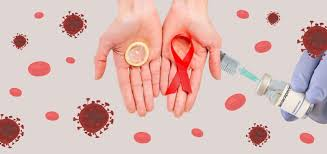
PANORAMA DEL VIH EN SANTA CRUZ
Concentración Nacional
El departamento concentra el 42% de los casos totales de VIH/sida en Bolivia.
1,200 - 1,400 casos nuevos detectados anualmente.
FACTORES DE RIESGO EN JUVENTUD CRUCEÑA
Inicio Temprano
Exposición sexual a edades cada vez menores.
Uso Inconsistente
Baja frecuencia en el uso del preservativo.
Consumo de Alcohol
Relacionado directamente con sexo sin protección.
PARTE III
Impacto Socioeducativo y de Salud
Riesgos del embarazo no deseado y aborto inseguro
IMPACTO EN LA TRAYECTORIA ESCOLAR
El Evento Detonante
El embarazo suele forzar el abandono escolar, limitando capacidades laborales futuras.
Factor Clave: La red de apoyo familiar (padres/abuelos) es determinante para la permanencia escolar.
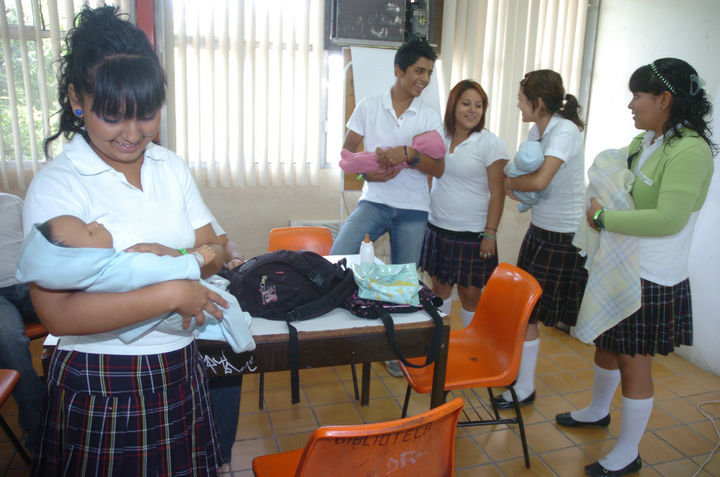
RIESGOS DEL ABORTO SIN SUPERVISIÓN
| Categoría de Impacto | Consecuencias Físicas Críticas |
|---|---|
| Inmediatas | Hemorragias graves, infecciones pélvicas y septicemia. |
| Largo Plazo | Perforación uterina e infertilidad definitiva. |
| Obstétricas | Complicaciones severas en futuras gestaciones. |
CONSECUENCIAS PSICOLÓGICAS
” El procedimiento en clandestinidad genera sentimientos de culpa, vergüenza, ansiedad y depresión, pudiendo derivar en ideación suicida en casos críticos.
VULNERABILIDAD BIOLÓGICA (< 16 AÑOS)
Debido al desarrollo incompleto del organismo, las adolescentes tempranas enfrentan:
Hipertensión Gestacional
Anemia Severa
Parto Prematuro
PARTE IV
Guía de Métodos Anticonceptivos
Análisis exhaustivo: Mecanismos y Efectividad
CLASIFICACIÓN DE MÉTODOS MODERNOS
Hormonales
Inhiben la ovulación.
Píldoras, implantes, inyecciones.
De Barrera
Bloqueo físico.
Preservativos, diafragma.
Permanentes
Esterilización definitiva.
Ligadura y Vasectomía.
1. PÍLDORAS ANTICONCEPTIVAS
Composición: Estrógeno y progestina.
Uso: Ingesta diaria vía oral a la misma hora.
Advertencia: Riesgo cardiovascular en fumadoras > 35 años. No protege contra ITS.
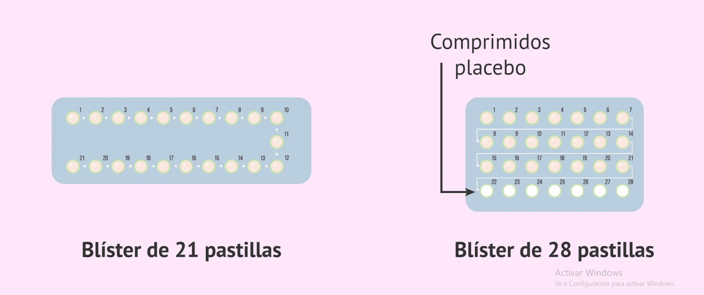
2. DISPOSITIVO INTRAUTERINO (DIU)
Tipos: Cobre (no hormonal) y Hormonal (Levonorgestrel).
Aplicación: Inserción uterina por profesional médico.
Duración: 3 a 12 años según el tipo.
Nota: Requiere revisión periódica de los hilos guía.
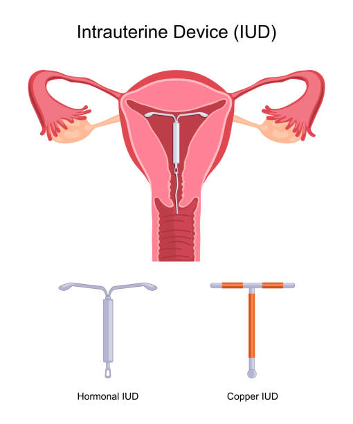
3. IMPLANTE SUBDÉRMICO
Mecanismo: Varilla flexible con progestina debajo de la piel del brazo.
Duración: 3 a 5 años de alta eficacia.
Efectos: Alteraciones en el patrón de sangrado menstrual.
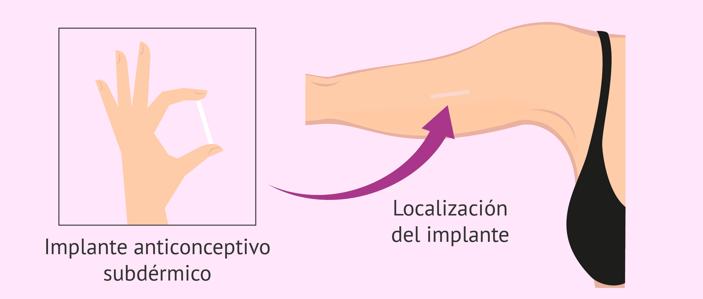
4. INYECCIÓN ANTICONCEPTIVA
Aplicación: Intramuscular o subcutánea cada 3 meses.
Efecto: Inhibición prolongada de la ovulación.
Advertencia: El uso > 2 años puede reducir densidad ósea (reversible).
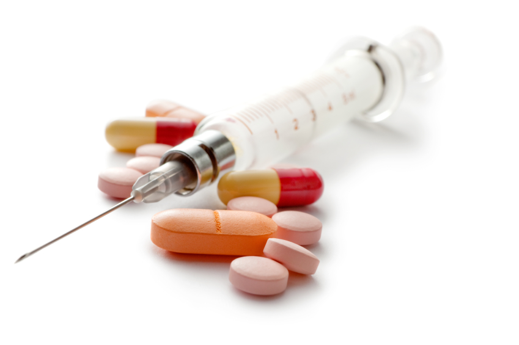
5. ANILLO VAGINAL
Uso: Anillo flexible que se inserta en la vagina por 3 semanas.
Descanso: 1 semana para el sangrado menstrual.
Reinserción: Se requiere uno nuevo cada ciclo.
6. PARCHE TRANSDÉRMICO
Uso: Adhesivo sobre piel limpia; se cambia semanalmente por 3 semanas.
Eficacia: Puede disminuir en mujeres > 90 kg.
Sitio: Glúteos, abdomen o espalda (evitar senos).
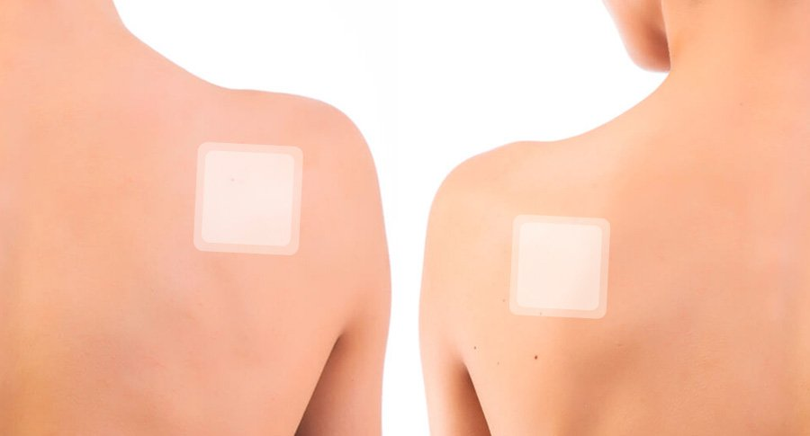
7. PRESERVATIVO FEMENINO
Material: Nitrilo o poliuretano (ideal para alérgicos al látex).
Ventaja: Protege contra ITS y embarazos.
NUNCA usar con condón masculino simultáneamente.
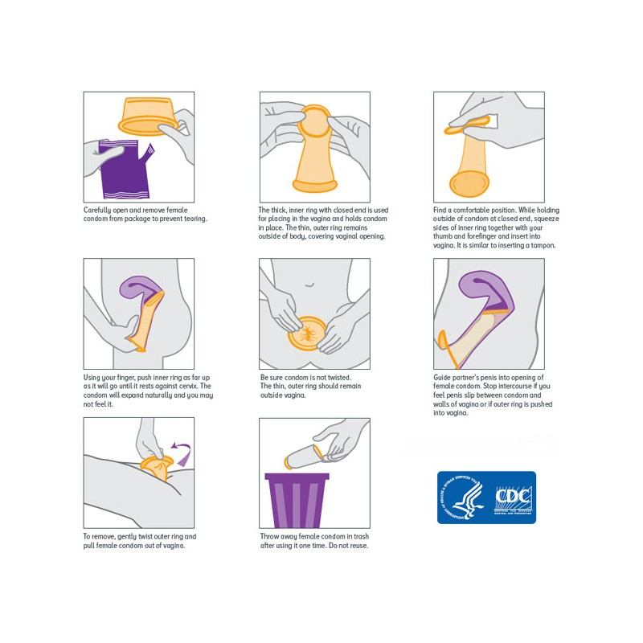
8. DIAFRAGMA Y CAPUCHÓN
Uso: Copas de silicona que cubren el cuello uterino.
Requisito: Debe usarse siempre con gel espermicida.
Riesgo: Dejarlo > 24h puede causar Síndrome de Shock Tóxico.
9. ESPONJA Y ESPERMICIDAS
Esponja: Poliuretano con Nonoxinol-9. Se activa con agua.
Espermicidas: Cremas o espumas aplicadas 15 min antes del coito.
Nota: Eficacia baja; se recomienda combinar con otros métodos.
10. LIGADURA DE TROMPAS
Procedimiento: Bloqueo quirúrgico de las trompas de Falopio.
Carácter: Permanente e irreversible.
Ventaja: No afecta el equilibrio hormonal ni el ciclo menstrual.
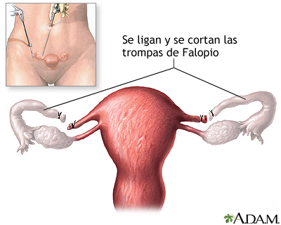
PRESERVATIVO MASCULINO
Material: Látex (generalmente). Único método que previene eficazmente ITS.
Advertencia: Evitar lubricantes al aceite (dañan el látex).
Responsabilidad: Fundamental en la prevención compartida.
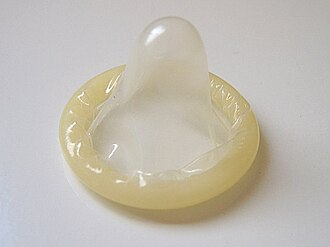
VASECTOMÍA (ESTERILIZACIÓN)
Procedimiento: Corte de los conductos deferentes.
Uso: Cirugía ambulatoria menor.
Nota: No es inmediata; requiere espermograma a los 3 meses.
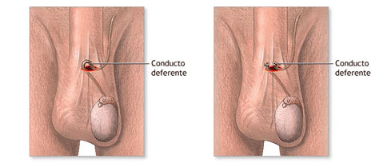
¿Preguntas?
La salud sexual es un derecho y una responsabilidad compartida.
Busque asesoramiento ginecológico personalizado.